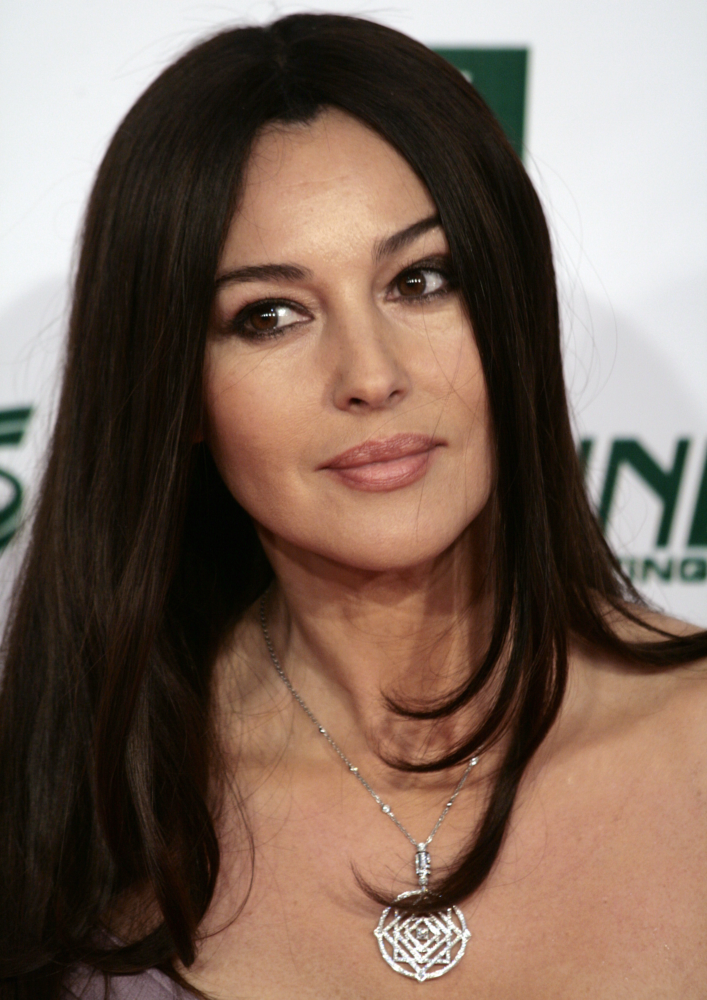

Monica Bellucci Biography: Age, Movies, Net Worth and Personal Life (2026)
She studied law, paid for it by modelling, and became the muse of Dolce & Gabbana — then walked away from the catwalk to become one of Europe's most famous film actresses. From Malèna to Persephone in The Matrix, from Mary Magdalene in The Passion of the Christ to the oldest Bond woman in history at 50, Monica Bellucci has spent four decades proving that a model can become a serious actress — and stay one. She is the first Italian celebrity on Stars of Europe.

Key takeaways
- Monica Anna Maria Bellucci, born 30 September 1964 in Città di Castello, Umbria, Italy, is 62 years old in November 2026 — she turned 62 on 30 September 2026.
- She studied law at the University of Perugia and paid for her studies by modelling; Elite Model Management signed her in 1988–89, and she became the muse of Dolce & Gabbana.
- Her acting breakthrough was the French film L'Appartement (1996), which earned her a César Award nomination for Most Promising Actress — and it was on that set that she met Vincent Cassel.
- Malèna (2000) made her famous worldwide; she then played Persephone in The Matrix Reloaded and The Matrix Revolutions (2003) and Mary Magdalene in The Passion of the Christ (2004).
- In Spectre (2015), at the age of 50, she became the oldest Bond woman in the history of the James Bond franchise.
- Her honours include the David di Donatello, Globo d'oro and Nastro d'Argento, the French Order of Arts and Letters (2006) and the Legion of Honour (2016).
- Her net worth is only an estimate, roughly $45 million–$65 million — sources disagree, so no single figure is given.
| Detail | Information |
|---|---|
| Full name | Monica Anna Maria Bellucci |
| Born | 30 September 1964, Città di Castello, Umbria, Italy |
| Age | 62 years old (in November 2026; turned 62 on 30 September 2026) |
| Height | 1.75 m (5 ft 9 in) |
| Nationality | Italian |
| Occupations | Actress, fashion model |
| Years active | 1980–present |
| Best known for | Malèna, The Matrix Reloaded and The Matrix Revolutions (Persephone), The Passion of the Christ (Mary Magdalene), Spectre (Lucia Sciarra) |
| Net worth | Estimated at $45 million – $65 million (see the net worth section below — no audited figure exists) |
| Family | Parents Pasquale Bellucci and Brunella Briganti; married Vincent Cassel 1999–2013; two daughters, Deva (born 2004) and Léonie (born 2010) |
Who Is Monica Bellucci?
Monica Bellucci is an Italian actress who began her career as a fashion model before working in Italian, American, British and French films. Her career covers almost every genre and language in European cinema — from Italian drama to French arthouse, from Hollywood blockbusters to the stage — and her awards include the David di Donatello, the Globo d'oro and the Nastro d'Argento, with nominations at the César Awards and the Saturn Awards. In 2018, Forbes Italy included her in its list of the 100 most successful Italian women.
What makes her story different from most biographies on this site is that she had two careers, one after the other, and succeeded at both. First she was one of the most photographed models of her generation — the muse of Dolce & Gabbana, the face of Cartier and Dior. Then, starting in her late twenties, she rebuilt herself as an actress, learned new languages for her roles, and worked her way from small Italian parts to the biggest franchises in the world. She has been described by several media outlets as a sex symbol, but the honours she has collected tell a different story: she was made a knight of the French Order of Arts and Letters in 2006 and of the French Legion of Honour in 2016, and she represents Italy as a permanent member of the Academy of Motion Picture Arts and Sciences — the body that votes for the Oscars.
Age and Early Life — Città di Castello to Perugia
Monica Anna Maria Bellucci was born on 30 September 1964 in Città di Castello, a small town in Umbria, in central Italy. She was the only child of Pasquale Bellucci, who owned a trucking company, and Brunella Briganti, a housewife and amateur painter. She grew up in Selci-Lama, in the municipality of San Giustino, on the banks of the Tiber River, and received a Catholic education. Her father later said she was a discreet child who grew up "surrounded by love" — but also that everyone stared at her, and that she complained about it. Modelling came to her early: at 13 she posed for a photographer who was a friend of the family, and at 16 she was asked to pose by her father's friend, the director of a fashion agency.
At school she studied philosophy, literature, Latin and Greek at the liceo classico, and she developed a taste for cinema, watching films by Vittorio De Sica, Federico Fellini, Roberto Rossellini, Luchino Visconti, Marcel Carné and Jean-Luc Godard. She has said her personality largely reflects her upbringing: "Certainly a lot of positivity also depends on the climate in which my parents raised me." After school she studied law at the University of Perugia, aiming to become a lawyer — and she financed her studies by working as a model. A friend encouraged her to apply to modelling agencies during her studies, and she moved to Milan, one of Europe's fashion centres. Modelling agent Piero Piazzi saw her arrive at the Elite Model Management agency and thought she could have been an actress — although in 1987 he had told her she was "not ready". Between 1988 and 1989, Elite signed her to a contract. In 1988 she appeared on the cover of Elle France, photographed by Oliviero Toscani, and on the cover of Vogue Spain.

Modelling Career — Elite, Dolce & Gabbana, Cartier
Bellucci's work as a model for Elite required her to travel, so she decided to leave university — she later said being a lawyer would not have suited her. She appeared in numerous international advertising campaigns, and Dolce & Gabbana recruited her as their muse. In 1989 she was living in New York and was already a millionaire. She worked in Milan, Paris and New York, and in 1990 the French luxury house Dior used her image and name for its Haute Couture line. She was photographed by Richard Avedon, and became the "protagonist" of Dolce & Gabbana's campaigns, "which elevated her to an icon of Mediterranean beauty". She also appeared in fashion parades for Fendi, and in advertisements for Givenchy, Nina Ricci, Yves Saint Laurent and Versace. In 1991 she became the brand ambassador for the cosmetics company L'Oréal, and appeared in the Sports Illustrated Swimsuit Issue, photographed in the Caribbean.
She stayed with modelling even after she turned to acting. In 1997, the year she was photographed by Avedon for the Pirelli Calendar, she became the brand ambassador and muse of Cartier jewellery — the first time, a Danish newspaper noted, that Cartier had associated an actress so closely with the house. Cartier stayed with her throughout her acting career, notably on red carpets, and designed a collection of luxury diamond jewellery inspired by her and bearing her name, first presented at a Cartier event in Dubai in 2007. In 2004, while pregnant with her first child, she posed nude for the Italian cover of Vanity Fair in a protest against Italian laws that restricted access to in vitro fertilisation — and she did the same again, semi-nude, for the April 2010 issue while pregnant with her second child. In 2006 she was named brand ambassador for Dior and the face of a range of its products until 2010. She was the face of Nivea for its 2018 and 2019 campaigns, and in June 2018 she opened the second day of Milan Fashion Week for Dolce & Gabbana — returning to the catwalk for the house for the first time since 1992, as Stefano Gabbana put it. She walked for the house again at the early 2019 Milan fashion week, alongside Helena Christensen, Eva Herzigová and Isabella Rossellini, as part of the return of 1990s supermodels to the spotlight. She remains the muse and ambassador of the Cartier brand in the 2020s, and since 2000 she has appeared on the covers of Elle, GQ, Harper's Bazaar, Marie Claire, Maxim, Paris Match, Vanity Fair and Vogue, among others.
Acting Breakthrough — L'Appartement
In 1990, Italian director Carlo Vanzina noticed a photograph of Monica Bellucci in a magazine and recommended her to Dino Risi, who was looking for a "new face" for his television miniseries Vita coi figli. Bellucci had never thought of becoming an actress and was surprised to be chosen. She made her acting debut in Vita coi figli, a two-part television film broadcast in Italy in May 1991, in which she played Elda. The same year she made her film debut in La Riffa, directed by Francesco Laudadio.
In 1992 she played one of the three brides of Dracula in Francis Ford Coppola's horror film Bram Stoker's Dracula. Roman Coppola had seen a photograph of Bellucci in the Italian magazine Zoom and urged his father to offer her a film role; Coppola arranged a meeting with her in Los Angeles while she was in New York for a photography session. After talking with Coppola, she realised she would embark on an acting career. Her role as a "sensual vampire" was her international film debut. Following her minor role in Dracula, she returned to Italy and enrolled in acting classes. As she later put it: "I craved it … I needed to act." She had difficulty overcoming the prejudices related to her modelling and her physical appearance, and had to work to establish her credibility. For the next four years she starred in Italian films, including the Emmy-winning biblical television miniseries Joseph (1995), but was ultimately dissatisfied due to the lack of opportunities, and aspired to an international acting career. In 1995 she moved to France to improve her career prospects, and settled in Paris.
Her portrayal of Lisa in L'Appartement (1996), a French film noir, earned her a César Award nomination for Most Promising Actress. It launched her career in France and strengthened her position as an actress — it was her first French-language film, and it was described as her break-out role. It was also the film on whose set she met Vincent Cassel, the French actor she would later marry.
Malèna and International Fame
Bellucci came to the attention of American audiences in Under Suspicion (2000) and gained greater international recognition as Malèna Scordia in Malèna (2000), directed by Giuseppe Tornatore. She had first met Tornatore in 1993, when he directed her in a television advertisement for Dolce & Gabbana perfume. Malèna — the story of a beautiful young war widow in a small Sicilian town during the Second World War, seen through the eyes of a boy who watches her from afar — became her signature role, and the film that made her name known far beyond Italy and France.
The years that followed were her busiest. She starred in the period horror Brotherhood of the Wolf (2001), played Cleopatra in the comedy Asterix & Obelix: Mission Cleopatra (2002) — one of the biggest French films of its year — and portrayed a rape victim in the controversial thriller Irréversible (2002), directed by Gaspar Noé. The film divided critics and audiences, but her performance in it was widely discussed, and it confirmed that she was choosing difficult, serious roles rather than safe ones.
The Matrix and The Passion of the Christ
In 2003 Bellucci joined one of the biggest franchises in the world, playing Persephone in the science-fiction films The Matrix Reloaded and The Matrix Revolutions. Persephone — the wife of the Merovingian, a programme who trades information for a kiss — was a small but memorable role, and it put her in front of audiences who had never seen a European arthouse film. A year later she was praised for her portrayal of Mary Magdalene in Mel Gibson's drama The Passion of the Christ (2004), a film that became one of the highest-grossing independent films ever made.
She kept working across languages and genres: she played a prostitute in How Much Do You Love Me? (2005) and in Shoot 'Em Up (2007), and acted in diverse roles in The Whistleblower (2010), The Ages of Love (2011) and The Wonders (2014). Her role in Ville-Marie (2015) earned her the Dublin Film Critics' Circle Award for Best Actress. On television she acted in Mozart in the Jungle (2016) and in the French hit Call My Agent! (2018), playing herself.
Spectre — The Oldest Bond Woman
At the age of 50, Bellucci appeared in the James Bond film Spectre (2015) as Lucia Sciarra, the widow of a murdered assassin, becoming the oldest Bond woman in the history of the franchise. It was a record that made headlines around the world — and a quiet statement about age in an industry that rarely casts women over 50 in such roles. Her part in the film is brief, a single scene in Rome, but it is the scene the film is remembered for opening with, and it introduced her to a new generation of cinema audiences who knew her only as a name. She later appeared in films such as On the Milky Road (2016), directed by Emir Kusturica, and The Man Who Sold His Skin (2020).
Stage Debut and Recent Work
In 2019 Bellucci made her stage debut as Maria Callas in Maria Callas: Letters and Memoirs, a one-woman show built from the opera singer's letters, which she performed in Paris and on tour. It was a new kind of challenge — live theatre, in French, playing one of the most famous voices of the twentieth century — and it showed the same ambition she had shown when she left modelling for acting: to keep learning, and to keep being taken seriously.
Her most recent film role is Delores in Beetlejuice Beetlejuice (2024), Tim Burton's sequel to his 1988 hit. She is still active in 2026: in August 2026 she appeared at the photocall for Ketticè at the 79th Locarno Film Festival in Switzerland, the photograph that now heads her Wikipedia page. At 62, with a career that began on the catwalk in the 1980s, she is still working — and still being photographed.
Awards and Honours
Bellucci's honours list covers both halves of her career. As an actress she has won the David di Donatello — Italy's top film award — the Globo d'oro and the Nastro d'Argento, and she was nominated for the César Award for Most Promising Actress for L'Appartement (1996) and for a Saturn Award. Her role in Ville-Marie (2015) earned her the Dublin Film Critics' Circle Award for Best Actress.
Beyond film awards, she has been recognised by France twice: she received the knight insignia of the French Order of Arts and Letters in 2006 and of the French Legion of Honour in 2016. In 2018, Forbes Italy included her in its list of the 100 most successful Italian women. She represents Italy as a permanent member of the Academy of Motion Picture Arts and Sciences, the organisation that votes for the Academy Awards.
Net Worth 2026
Monica Bellucci's net worth is estimated at between $45 million and $65 million. That range is the honest answer, and it needs explaining. No audited figure for her wealth exists — she has never published her finances. Different trackers publish very different numbers: the most-cited figure is around $45 million, but that number comes from a 2015 estimate and has no newer public anchor, while other sites put the figure at $50 million, $60 million or $65 million, depending on how they count her modelling contracts, film fees and brand work.
What is clear is where the money comes from. Her modelling career alone — Elite, Dolce & Gabbana, Cartier, Dior, L'Oréal, Nivea — spanned four decades and made her a millionaire by 1989, when she was 25. Her film career added more than thirty years of leading roles in Italian, French and Hollywood films. And her long brand relationships, above all with Cartier, have run alongside both careers. On our Top 10 Richest Celebrities page, her range would place her at #3 — behind Kylian Mbappé ($180m–$250m) and Penélope Cruz ($75m–$90m), and ahead of Marion Cotillard ($30m–$50m).
Personal Life
Bellucci keeps her private life mostly private, and this article does the same. She was first married to photographer Claudio Carlos Basso, from 1990 to 1994. She then married French actor Vincent Cassel in 1999 — they had met on the set of L'Appartement three years earlier, and starred together on screen in partnerships that spanned ten years. They were married until 2013 and have two daughters: Deva, born in 2004, and Léonie, born in 2010. Deva Cassel has herself begun a modelling and acting career.
Her biography also lists director Tim Burton as a partner from 2022 to 2025 — they worked together on Beetlejuice Beetlejuice (2024). Beyond that, she rarely talks about relationships in public. What she does talk about is her family and her work: she has said that the climate in which her parents raised her is the reason for much of her positivity, and she has spoken openly about the choices she made as a mother — including posing for Vanity Fair while pregnant in 2004, as a protest against Italian laws that restricted access to in vitro fertilisation.
Filmography Highlights
| Year | Title | Role / Notes |
|---|---|---|
| 1991 | La Riffa | Film debut (Francesca) |
| 1992 | Bram Stoker's Dracula | One of Dracula's brides — international film debut |
| 1996 | L'Appartement | Lisa — César nomination, Most Promising Actress |
| 2000 | Malèna | Malèna Scordia — her signature role |
| 2001 | Brotherhood of the Wolf | Sylvia |
| 2002 | Asterix & Obelix: Mission Cleopatra | Cleopatra |
| 2002 | Irréversible | Alex |
| 2003 | The Matrix Reloaded | Persephone |
| 2003 | The Matrix Revolutions | Persephone |
| 2004 | The Passion of the Christ | Mary Magdalene |
| 2007 | Shoot 'Em Up | Donna Quintano |
| 2010 | The Whistleblower | Laura Leviani |
| 2015 | Spectre | Lucia Sciarra — oldest Bond woman in franchise history, at 50 |
| 2016 | On the Milky Road | Nevesta |
| 2020 | The Man Who Sold His Skin | Soraya |
| 2024 | Beetlejuice Beetlejuice | Delores |
FAQs
How old is Monica Bellucci?
Monica Bellucci was born on 30 September 1964 in Città di Castello, Umbria, Italy, so she is 62 years old in November 2026. She turned 62 on 30 September 2026.
What is Monica Bellucci's net worth?
Her net worth is estimated at $45 million–$65 million, based on the range published by celebrity-finance trackers. The most-cited figure, $45 million, comes from a 2015 estimate, while other sites go as high as $65 million. No audited figure exists, so any precise number should be treated as an estimate, not a fact.
What is Monica Bellucci best known for?
Malèna (2000), in which she played the title role; Persephone in The Matrix Reloaded and The Matrix Revolutions (2003); Mary Magdalene in The Passion of the Christ (2004); and Lucia Sciarra in Spectre (2015). Before acting, she was one of the most famous models of her generation, as the muse of Dolce & Gabbana.
Was Monica Bellucci a Bond girl?
Yes. She played Lucia Sciarra in Spectre (2015), and at the age of 50 she became the oldest Bond woman in the history of the James Bond franchise.
Who was Monica Bellucci married to?
She was married to French actor Vincent Cassel from 1999 to 2013 — they met on the set of L'Appartement (1996). She was earlier married to photographer Claudio Carlos Basso, from 1990 to 1994.
Does Monica Bellucci have children?
Yes — two daughters with Vincent Cassel: Deva, born in 2004, and Léonie, born in 2010. Deva Cassel has begun a modelling and acting career of her own.
Is Monica Bellucci Italian?
Yes. She was born in Città di Castello, Umbria, Italy, and she represents Italy as a permanent member of the Academy of Motion Picture Arts and Sciences.
What was Monica Bellucci's first film?
Her film debut was La Riffa in 1991; her acting debut was the television miniseries Vita coi figli the same year. Her international film debut was as one of Dracula's brides in Bram Stoker's Dracula (1992).
Is Monica Bellucci still acting in 2026?
Yes. Her most recent film is Beetlejuice Beetlejuice (2024), and in August 2026 she appeared at the photocall for Ketticè at the 79th Locarno Film Festival in Switzerland.
What is Monica Bellucci's height?
She is 1.75 m tall (5 ft 9 in), as listed in her biography.
Sources
Facts in this article were checked against: Wikipedia — Monica Bellucci (birth date and place, family, law studies, Elite and Dolce & Gabbana, filmography, awards, honours, height 1.75 m, years active 1980–present, Tim Burton listed as partner 2022–2025); Forbes Italy 2018 (100 most successful Italian women); Alux, October 2026 (net worth $45m figure noted as a 2015 estimate; other trackers $50m/$60m/$65m); Wikimedia Commons (hero photo: "Monica Bellucci, Women's World Awards 2009 b.jpg", Manfred Werner, CC BY-SA 3.0; 1990 photo: "Monica Bellucci - March 1990.jpg", Lanvin photograph, CC BY-SA 4.0). All writing is original to Stars of Europe. No thin biography blogs were used as sources.